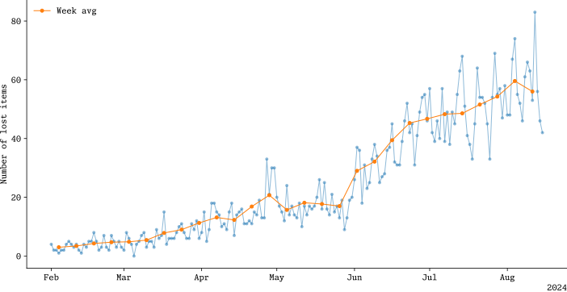

Data
29 August 2024
Recently I was traveling with a polish InterCity train and I have left my water bottle behind. I have checked the website and I was surprised that there is an online table of things which have been left in trains. Here you can find this website.
This gave me an idea: I want to see where and what exactly people leave behind while traveling with trains. For this I have created a simple BASH script which downloads all the websites with the data, and extracts information about lost items. What I have left is the .csv file with dates, train numbers, stations where the item was found and the category of the item. Data is heavily flawed, since there is inconsistency in naming of the cities. Sometimes one can find Wrocław Główny and sometimes Wrocław Gł. and even Wrocław. I have taken care of it with Vim scripting.
First thing I have looked into was the frequency items.

It seems that the number of lost items is growing. It is unclear what is the cause of it. I can see potential two reasons: 1) system of reporting is new (February 2024) and it sill didn't saturated (number of people who reports those items is growing) 2) holiday season in Poland, which started in June (first for universities, then for schools). The real answer is probably a mixture of both of them.Do you see the peak around 1st of May? In Poland there are two national holidays in May: 1st (Labour Day) and 3rd (Constitution Day). This year they happened to fall on Wednesday and Friday, which means that if you take Monday and Tuesday off then you have 9 free days. And many people used this fact. The peak starts on 27th of April, which was the Saturday week before.
Looking at the graph above one can see that there is some kind of oscitation with period of few days, especially from June on. Becasue of that I have checked on what day of the week most items are lost.  As most of us would expect: most of the things are lost on Saturday and Sunday, and least on Tuesday. It make sense since most of people have time to travel on weekends.
As most of us would expect: most of the things are lost on Saturday and Sunday, and least on Tuesday. It make sense since most of people have time to travel on weekends.
Now let's talk about the cities where most items are found. Figure below shows the distribution in time for Top 10 stations with most lost items.  What those stations have in common? That they are all the final stations for most of the trains. And Kraków is both final station and most touristic city in Poland.
What those stations have in common? That they are all the final stations for most of the trains. And Kraków is both final station and most touristic city in Poland.
And whats is lost the most? It seems that its 1) cloths, 2) electronics, 3) personal belongings, 4) backpacks, 5) bags, 6) documents, 7) books, 8) cell phones, 9) tourist equipment and 10) wallets.
Another interesting question is if there is a city in which some specific items are lost more often. For that, let's look into the correlation between items lost and the cities where they were found. Ubranie (cloths) are lost so often that they are making this graph hard to read. Instead of looking at the absolute numbers let's see the participation of a given category in a given city. We obtain it by dividing all the numbers in the previous graph by the sum of all the numbers in the same column.
It looks like in most of cities most lost items are cloths (with 20-40% of participation), but there are exceptions. Take a look at Poznań - only 6% of all items lost in this city are clothing. Another interesting fact is that every 10th item lost is phone in Poznań and Bydgoszcz.
Similarly we can look at the participation of a given city in a given category. To obtain that we normalize the grid row-wise (in previous graph we did it column-wise). Most of each category is found in Kraków, but there are exceptions. Most backpacks are found in Gdynia and most cell phones are found in Warszawa Olszynka Grochowska. Wallets and documents are not to be found in big stations. Those two distributions have really long tail - most of wallets/documents are found in small towns only once or twice.
To summarize, this data can be used to determine when people have holidays in Poland, since it can be seen as a peak in the number of lost items. Maybe deeper analysis would also reveal the profile of an average traveler, based on the items lost, but this probably requires more data. I hope the website will be updated as long as possible :)
MS